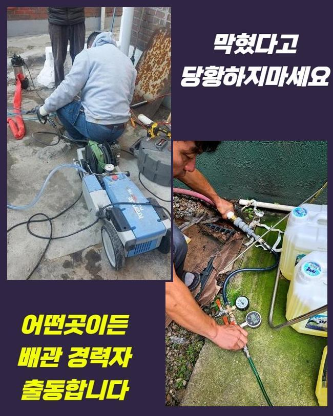
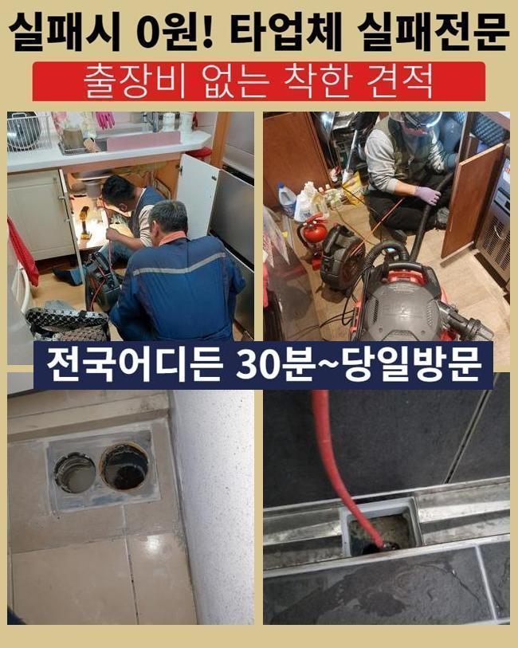
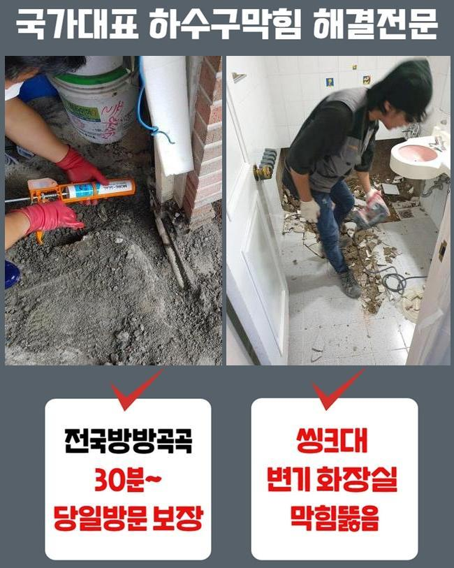
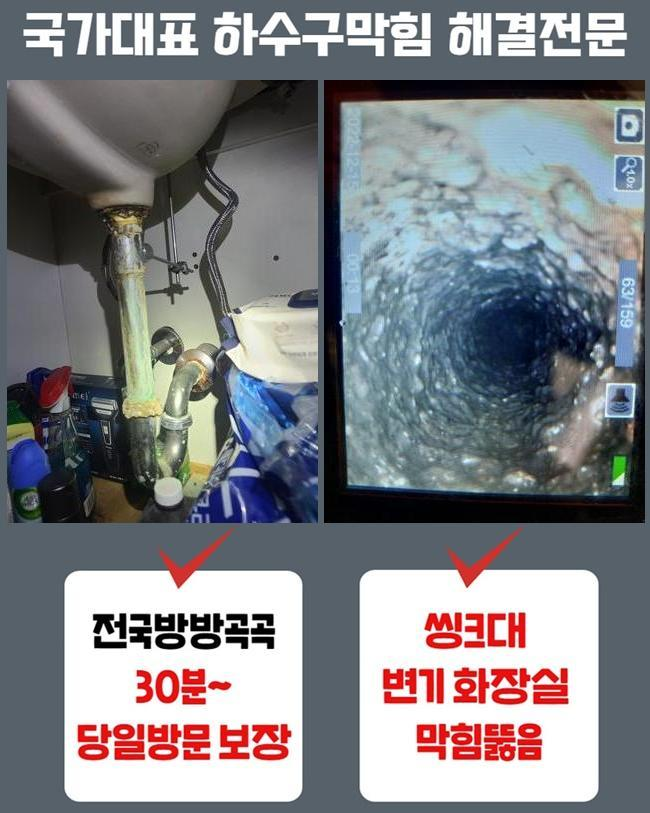
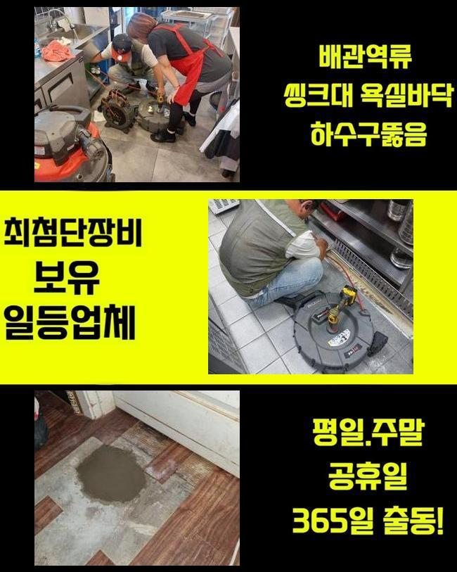
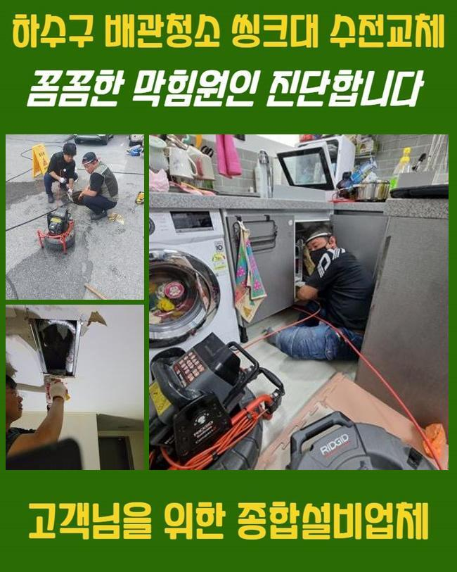
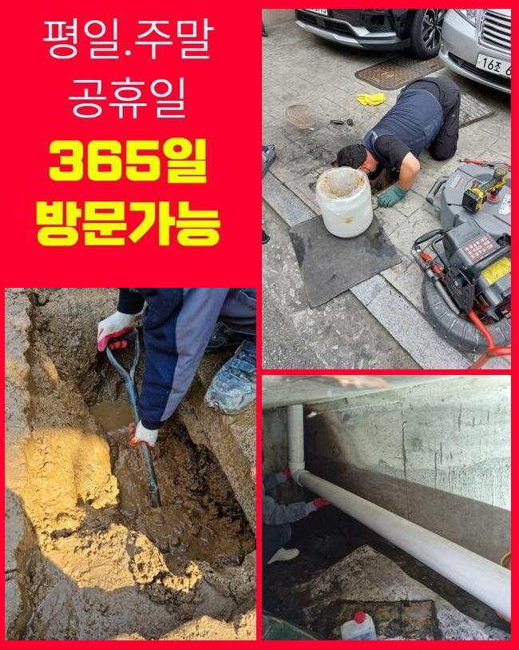

🏠 파주 하지석동대변기막힘 조리읍 배관내시경카메라 누수
파주 변기막힘 전문 시공 후기

📋 작업 개요
- 위치: 파주
- 서비스 유형: 변기막힘, 하수구막힘, 배관막힘, 누수수리, 뚫는업체, 배관청소, 고압세척, 설비공사, 악취차단
- 작업 일시: 2025. 5. 27. 12:21
- 업체명: 하수구수사대 (010-5615-2118)
🔍 문제 상황
파주 하지석동대변기막힘 조리읍 배관내시경카메라 누수
저희측은 배수시스템과 연계된 여러가지의 시공을 시행중에 있죠
관련된 인력과 장비를 갖추고 고객께서 처해있으신 고장에 바로바로 응대해드린답니다
금번에는 주방배관막힘 처치 과정을 말씀드리도록 할게요
그저께 의뢰를 해주셨던 위치는 푸드코트 건물입니다
영업장의 하수구가 막혀버렸으며 엎친데 덮친격으로 화장실 배수마저 시원치않다고 토로하셨어요
마침 근방에 대기중인 작업자가 즉시 내방드렸고 알맞은 방책을 시행하기로 합니다
주방배수구 정체와 내부화장실의 막힘발생 지점은 닭요리를 전문으로 하는 곳이었죠
개수대 부근에서는 음식찌꺼기의 유입량이 많아 관로 정체가 빈번하게 일어난답니다
그렇기에 음식점을 하시는 분들은 그와 관계된 여러종류의 조치를 취하실 때가 많은데요
오랜기간 사려깊게 이용하셨더라도 갑작스럽게 단단한 물체가 혼입된다면 물막힘이 발발하기 쉽기 때문에 조심해야 해요
금번 내방한 곳은 어떠한 이유로 체증이 발발한 것인지 빈틈없이 점검해보겠습니다
우선 주방쪽부터 파악하기로 합니다
음식점의 배관은 일반가정의 주방과 다르게 배수트렌치의 사이즈도 상당히 크죠

🔎 원인 분석
💡 전문가 진단: 정밀 진단 장비를 사용하여 슬러지의 고착 여부를 판명하고 타격/세척 작업을 실시했습니다.
그렇기 때문에 감당가능한 하수량 역시 커질수밖에 없는건데요
그렇기 때문에 통상적인 주거장소의 시험방법을 토대로 공사여부를 결정해선 안되고 충분한 물을 투입해서 배수가 제대로 되는지 파악해보아야 하겠습니다
이런 공정을 올바르게 하지 않고 넘어가버린다면 몇주 못가서 정체가 재발하기 쉽습니다
조사를 해보았고 원활하게 배수처리가 안된다는걸 간파할수가 있었어요
느릿느릿 빠져버리기는 하였지만 정상적으로 사용을 이어나가기엔 힘겨운 상태였어요
다음으론 배관안으로 배관내시경을 투입시켜 명확히 문제를 진단하기로 했어요
기름찌꺼기들과 미세한 석회성분들이 가득한 형국이었답니다
관로 속에 들어가면 안될것들이 누적되어서 막힘이 발현된거죠
이러한 것들과 관계된 관로에 흘러들어가는것을 주의해야할 것들을 설명하는 시간을 가져보도록 할게요
설명하는 것들을 메모해두셨다가 평상시에 활용해보실것을 권장합니다
기름기는 배수과정에서 고착화되고 그로인해 배관면에 체류할 여지가 큰데요
그러하기에 반드시 주방용 휴지로 소제한후에 물세정을 하는것이 중요하죠
또한 기름을 별도로 처리하는 과정도 능동적으로 쓰시는게 합당합니다
매장에 구비해두시는 원두커피에서 발생되는 가루들도 하수도막힘을 야기할수 있죠
원두커피는 유분을 흡수하는 특징이 있기에 배관속에서 뒤엉키기 쉽답니다

🔧 작업 과정
그렇기에 일반쓰레기로 분류하여 처분하는게 바람직해요
설거지 과정에서 잔여물질을 곧장 주방의 배수관으로 폐기한다면 배관벽면에 붙을 여지가 있어요
고춧가루 등은 과립이 작기에 필터를 뚫고 배관으로 유입될수 있어 개별적으로 버리는것이 바람직해요
메뉴를 조리하시다가 생겨난 전분가루 등도 주방설비에 그냥 투입해 버리면 엉겨붙어서 관의 정체를 일으킬수 있죠
그러하기에 이러한 것들은 필수로 분리수거해서 배수설비를 깔끔하게 관리해나가실 것을 권장합니다
내시경기기를 활용하여 깊은층까지 검사했더니 중앙의 관로까지 트러블이 일어났을거라 예상되었으며 추가로 검사해보기로 했죠
우선 의뢰인의 식당의 관로 세척을 해야하겠죠
닭요리 위주로 조리를 하셔서 여타 업장들과는 달리 유분찌꺼기가 많았으며 그외의 노폐물들과 믹스되어서 이물이 가득찬 상태였죠
이것들이 장기간 체류하면서 배수관면에 고착화된 형국이었죠
분쇄기기를 써서 주방시설의 초기 세척작업을 단행하게 되었습니다
부속품은 상황에 따라서 교체할때도 있으나 보통 쇠사슬의 모양을 가진 노커를 이용하는데요
나일론으로 피복된 금속케이블 끝단에 카바이드 체인이 붙어있어서 하수관안에 투입한뒤 가동시키면 고속으로 회전하면서 누증된 이물질들을 파쇄시키는 공정을 이행하게 만들어주죠
통상적으로 샤프트를 이용하면 이물들이 수월하게 탈락합니다
하지만 이전 점검을 토대로 여긴 공동 하수도까지 이물질이 전가되었다는걸 알아낸바가 있죠
그럴때에는 개별하수관의 세정만으로 근원적인 트러블이 처리되지 않죠
정리된걸로 오인이 일어나기도 하지만 공동하수관이 막혔다고 한다면 몇주정도가 흐른다음에 거듭해서 파이프가 막혀버릴수 있습니다
개별배관 청소를 마친다음 지하공간에 설비된 메인관을 진단하기로 합니다
내시경기기를 투입하니 두껍게 누적된 검정색의 잔재들이 가득차 있었어요
긴시간 퇴적을 이룬것으로 생각되었고 배관부피도 컸기 때문에 더더욱 오물이 많아진거에요
이부분을 고압물청소를 통하여 정리하기로 결단했고 2시간이 넘게 소제를 시행했죠
공동관까지 스케일링 작업을 하고나서 의뢰인분의 닭요리집으로 올라가서 배수구 물내림점검과 욕실까지 시험을 시행하였더니 거짓말같이 속시원하게 뚫음이 이루어져서 시원하게 빠져나갔답니다
이번에 방문했던 곳은 엄청난 기름찌꺼기와 석회물질 덩어리가 막힘의 사유라 볼수 있었고 기계실의 공동관까지 차단된 상태였기때문에 무척이나 심각했었죠
그 부분을 분쇄장비와 물세척공정으로 체계적으로 처리했고 개운하게 개통된 정황을 목도할수 있었죠
공정을 끝마치고 생활중에 발발가능한 막힘상황들과 알고있으면 도움되는 하수도관리 절차등을 설명해 드렸어요


✅ 작업 완료
귀가한뒤에 연락주신뒤 관련된 내용을 여쭤보셔서 꼼꼼하게 다시금 설명드렸죠
세척을 대충대충 진행해버린다면 몇달뒤 배수관에 더욱더 큰 문제가 생겨날수 있답니다
그러므로 정확한 시공방식을 접목시켜 해결해내려는 태도가 필요합니다
이에 따라 여러 변수를 염두에 두고 수리를 수행하여야 한다는걸 안내드립니다
식당에서 갑자기 하수관막힘이 생긴다면 운영상에 커다란 문제가 생기겠죠
그러니 미세하게나마 트러블이 목도되었다면 망설이지말고 전문가에게 의뢰하시길 바라요




⚠️ 베란다 누수 및 방수 관리 방법
- ✅ 비가 많이 올 때 창틀 주변이나 아래층 천장에 얼룩이 생기는지 정기적으로 확인해 보세요.
- ✅ 우수관 주변 실리콘 마감이 들뜨거나 깨진 틈새가 있는지 손상 여부를 수시로 체크하세요.
- ✅ 베란다 바닥 타일의 줄눈(메지)이 소실되면 그 틈으로 물이 침투하여 누수가 유발됩니다.
- ✅ 누수 의심 증상 발견 시 방치하면 아래층 손실이 커지므로 즉시 전문가의 진단을 받으십시오.
💡 핵심 정리
- 확실한 장비 작업(내시경 점검 및 샤프트 스케일링)으로 원인을 뿌리 뽑습니다.
- 작업 후 1년 이내에 동일한 부위 재발 시 100% 무상 A/S 서비스를 보장합니다.
- 서울 · 경기 · 인천 전 지역에 24시간 언제든 긴급 출동할 수 있도록 항시 대기 중입니다.
❓ 자주 묻는 질문 (FAQ)
🚨 파주 변기막힘 문제로 고민이신가요?
정확한 원인 진단과 확실한 시공으로 재발 없는 해결을 약속드립니다.
24시간 긴급 출동 | 서울 · 경기 · 인천 전지역 | 1년 내 재발 시 무상 A/S